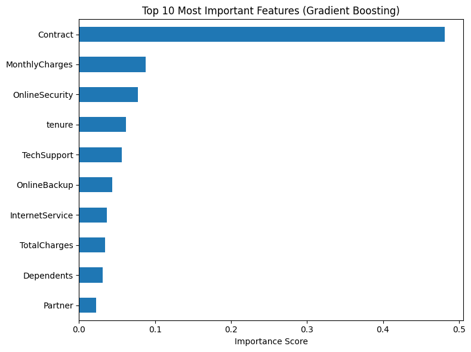
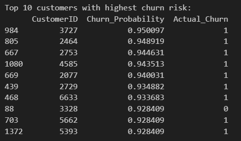
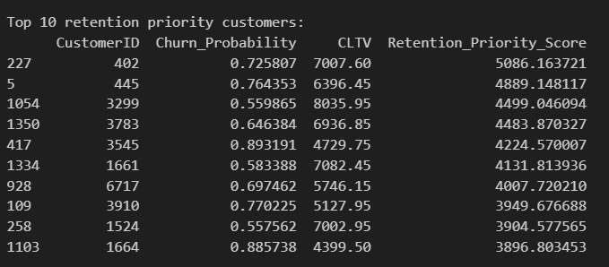
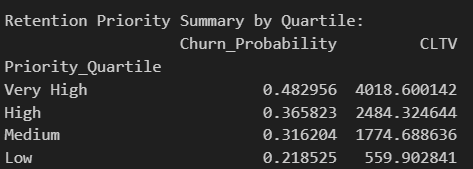

6) Project objectives addressed
🎯 6.1) Objetive 1. Detect key drivers of churn
"Detect key drivers of churn"
✔️ Implemented Using Feature Importance
- The project used the GradientBoostingClassifier, a tree-based ensemble method that provides a reliable feature importance metric.
- A bar chart of the Top 10 most important features was generated.
- This helps identify attributes like Contract, TechSupport, and TotalCharges that most influence churn.
- Enables marketing and CRM teams to understand why customers are leaving.

🔍 Business Insight (Detect key drivers of churn)
Top Predictors Identified (Gradient Boosting Feature Importance)
-
Contract – By far the most influential factor. ▸ Customers with flexible (month-to-month) contracts are much more likely to churn than those on long-term agreements.
-
MonthlyCharges – Highly predictive of churn. ▸ Customers paying higher monthly fees are more prone to leave, possibly due to cost sensitivity or unmet expectations.
-
OnlineSecurity – Strong negative correlation with churn. ▸ Customers without online security are more likely to churn, suggesting this service may increase customer stickiness.
-
Tenure – Loyalty indicator. ▸ Customers with shorter tenure are more likely to churn. Long-standing customers are less at risk.
-
TechSupport, OnlineBackup – Meaningful contributors. ▸ Add-on services such as tech support and backup correlate with lower churn rates, likely due to enhanced service engagement.
-
InternetService, TotalCharges – Relevant, but less dominant. ▸ Fiber optic users may churn more, and lower total charges often reflect newer, high-risk customers.
-
Dependents, Partner – Moderate influence. ▸ Customers with no dependents or partner tend to churn more, possibly due to lower stability or loyalty.
📈 Business Insights
- Contractual flexibility is the most powerful driver of churn. Month-to-month users should be prioritized for retention incentives or upgrades to longer-term plans.
- Value-added services like OnlineSecurity and TechSupport show a protective effect. Bundling them in promotional packages could reduce churn.
- High-bill customers are more volatile. Consider delivering personalized experiences or loyalty rewards to increase perceived value.
- Demographic features (partner/dependent status) can help create behavioral customer personas for targeted retention campaigns.
🎯 6.2) Objetive 2. Estimate individual churn probabilities (scoring)
"Estimate individual churn probabilities (scoring)"
✔️ Implemented Using Model Predictions
- The model outputs individual churn probabilities with predict_proba().
- Probabilities are stored in a DataFrame and sorted.
- This allows teams to identify high-risk customers and act proactively.
- The top 10 churn-prone customers are highlighted.

🔍 Key Insights – Churn Scoring (Objective 2: Estimate churn probability - scoring)
-
High accuracy in identifying churn-prone customers Among the top 10 customers with the highest predicted churn probability, 9 actually churned (
Actual_Churn = 1). This shows the model is highly effective at capturing relevant patterns. -
Very high probabilities (above 0.92) Most listed customers have probabilities above 0.93, indicating that the model produces highly reliable risk scores for prioritization.
-
Direct applications for personalized retention Identifying high-risk customers enables proactive actions by Marketing and CRM teams, such as:
- Offering personalized discounts;
- Launching re-engagement campaigns;
-
Prioritizing high-risk customers for support.
-
Segmentation and automation of actions The churn scores can be combined with CLTV or demographic profiles to segment campaigns, increase ROI, and reduce churn strategically.
-
Potential for integration into dashboards and CRM systems The scores can be exported or visualized in dashboards for real-time churn risk monitoring and decision-making.
🎯 6.3) Objetive 3. Prioritize retention actions based on churn risk and CLTV
"Prioritize retention actions based on churn risk and Customer Lifetime Value (CLTV)"
✔️ Implemented Using Priority Score
- A new score was calculated:
Retention_Priority_Score = Churn_Probability × TotalCharges
- TotalCharges acts as a proxy for CLTV.
- Customers are segmented by quartiles of priority.
- Enables focused retention strategies on high-value, high-risk customers.

🔍 Key Insights (Objective 3: Retention Prioritization Based on CLTV - Customer Lifetime Value- (TotalCharges)):
- The Retention Priority Score effectively ranks customers based on both the likelihood of churn and their financial value to the company.
- The top 10 customers with the highest retention priority were identified, combining high churn risk with high CLTV.
- These high-value at-risk customers represent critical targets for personalized retention strategies.
- This approach allows marketing and CRM teams to:
- Allocate resources efficiently to customers who matter most.
- Design proactive campaigns aimed at preserving long-term revenue.
- Segment the base by quartiles of retention score for scalable action plans.

Quartile Segmentation Insights
Customers were divided into quartiles based on their Retention Priority Score:
| Priority Quartile | Avg. Churn Probability | Avg. CLTV |
|---|---|---|
| Very High | 0.482956 | 4018.60 |
| High | 0.365823 | 2484.32 |
| Medium | 0.316204 | 1774.69 |
| Low | 0.218525 | 559.90 |
🔍 Key Insights
- Very High Priority Segment has the highest churn probability (48.3%) and the highest average CLTV (~$4,000), indicating these are high-value customers at high risk of churn.
- High and Medium segments show moderate churn probability with substantial revenue potential, suitable for cost-effective retention actions.
- Low Priority Segment includes customers with lower churn risk and low revenue contribution, suggesting less urgent action is needed.